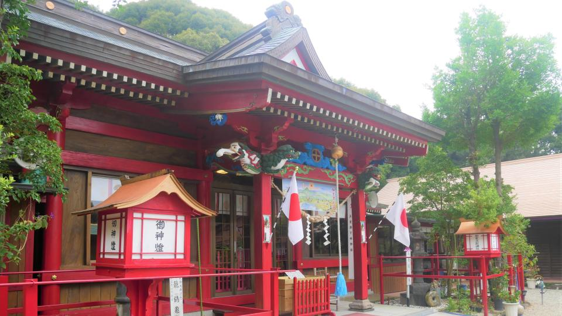

鶴
出水市は、日本最大のツルの越冬地として知られ、毎年冬になると1万羽以上のツルが飛来します。
その数と種類の多さは日本一と言われており、「鹿児島県のツル及びその渡来地」として国の特別天然記念物にも指定されています。
画像引用元

加紫久利神社
春には「庭祭」という神事が行われ、境内を田に見立てて稲作の所作を演じ、豊作が祈願されます。3月の春祭では多くの露店が並び、県内外から参拝客が訪れるにぎやかな行事となっています。
画像引用元
クレインパークいずみ
出水市ツル博物館クレインパークいずみは、「ツル・出水・ふれあい」をテーマに、出水の自然やツルに関する資料を集めて展示し、学びや調査の場を提供する文化施設として設立されました。
画像引用元